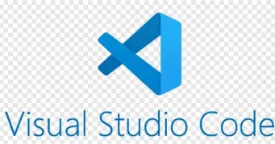
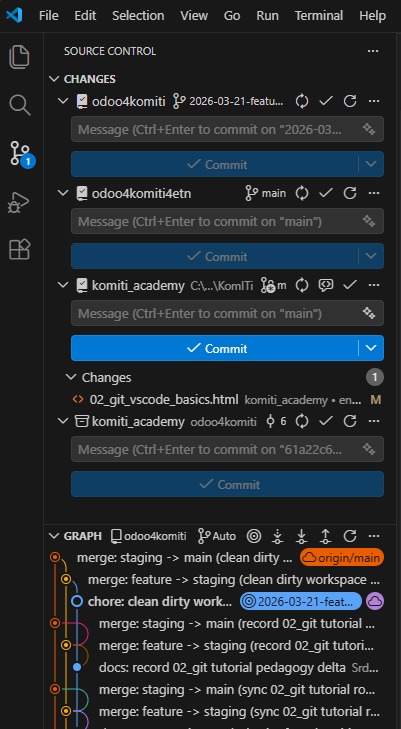
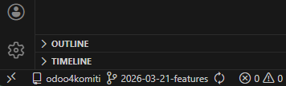

Git is a distributed version control system — a tool that tracks every change to every file in a project, keeps a complete history, and lets multiple people work on the same codebase without overwriting each other's work.
Imagine that:
You can only have one binder open on your desk at a time; when you are done, you can copy sheets from one binder into another. Git keeps every version of every sheet, compressed, inside a hidden .git/ folder — so nothing is ever lost.
Git and GitHub are not the same: Git is a version control system, and GitHub is a platform where the remote repo lives.
Remember we imagined Git as a cabinet with binders? Now let's look at that diagram through the same analogy, using the KomITi workflow as a concrete example.
The feature → staging → main promotion pattern is a widely adopted branching strategy. It originates from Vincent Driessen's Git Flow model (2010) and is documented in the official Git Book — Branching Workflows. KomITi follows this pattern as defined in ENGINEERING_HANDBOOK.md.
According to best practices and ENGINEERING_HANDBOOK.md of KomITi, your local cabinet (e.g. C:\dev\komiti_library) should contain three binders:
main — the clean, published binder. Whatever sheets are in here is what the world sees.staging — the review binder. Before any sheets go into main, they are first copied here so someone can check them.feature (e.g. 2026-03-21-features) — your personal working binder. This is where you actually write on sheets.git checkout is you pulling one binder out of the cabinet and putting the others back, as you can only have one binder open on your desk at a time. Your desk always shows the sheets of whichever binder you currently have open.
GitHub (the remote called origin) is a second cabinet on the remote side of the room. It keeps its own copies (called REMOTE or origin/) of the same three binders: origin/main, origin/staging, origin/feature. The same branch can exist in two places: locally, on your computer and remote, on GitHub. The diagram above shows exactly this: the bottom row is your desk (LOCAL), the top row is the remote cabinet (REMOTE).
The arrows in the diagram map to real actions (Workflow):
git checkout -b yyyy-MM-dd-feature (arrow at the bottom going left ←) = You, developer, starts by taking a fresh empty binder, copy the current sheets from main into it, and label it feature.git checkout main → git pull origin main → git checkout -b 2026-03-23-play_xyz.git add + git commit (working inside the binder) = you change sheets (files) in VS Code, check what you did with git status --short and git diff --stat, then save a snapshot with git add <file> and git commit -m "your message".git push (arrow going up ↑) = you walk to the remote cabinet and replace its copy of a binder with your updated version.git push -u origin 2026-03-23-play_xyz — your local branch now also has a remote copy origin/2026-03-23-play_xyz.git merge (arrow going right →) = you copy the sheets you wrote in one binder into another binder, on your desk.git checkout staging → git pull origin staging → git merge 2026-03-23-play_xyz → git push origin staging. Then repeat for main.git pull (not shown, but the reverse of push) = you walk to the remote cabinet, take the latest copy, and update the binder on your desk.So the full KomITi flow in the cabinet analogy is:
NO. You have one single folder (e.g. C:\dev\komiti_library), and Git changes the contents of that same folder when you switch from branch to branch. When you run git checkout main, Git replaces the files in that folder with the state of the main branch from the local .git/ database. When you run git checkout 2026-03-23-play_xyz, Git replaces the files in the same folder with the state of that feature branch. Therefore:
checkout) branches — it only overwrites files on disk from the local .git/ database where Git stores all states of all branches, compressed (files that differ Git overwrites, files that exist only on the old branch Git deletes, and files that exist only on the new branch Git creates).That is why it is so important to know which branch you are on before you delete or change something — because you are working in the only copy of the folder on disk. In the cabinet analogy: you do not have a separate cabinet for each binder — you have one cabinet and Git always puts on your desk the binder you are currently working on; the other binders are "hidden" in .git/ and waiting for you to call them.
Concrete example: imagine a repo with three branches — main, staging and 2026-03-23-play_xyz — each containing different files. Both Windows Explorer and VS Code Explorer always show only the currently checked-out branch:
git checkout main PS C:\dev\komiti_library> ls x.md
git checkout staging PS C:\dev\komiti_library> ls x.md y.md
git checkout 2026-03-23-play_xyz PS C:\dev\komiti_library> ls x.md y.md z.md
You never see files from all three branches at once. When you run git checkout staging, Git:
staging from the .git/objects/ database,staging does not have — physically deletes from disk,staging has but the previous branch did not — physically creates on disk.When you switch back to main, Git deletes y.md because main only has x.md. The original files are not lost — they are stored compressed in .git/objects/. You can verify this outside VS Code: open Windows File Explorer, switch branches in the terminal, and you will see files physically appear and disappear.
What is the .git/ database actually? It is not an SQL database nor plain text — it is a folder-based object store, i.e. a structure of folders and compressed files that Git maintains in the hidden .git/ folder inside your repo. When you run git init or git clone, Git creates that folder and stores literally everything in it: every commit, every version of every file, every branch. The structure looks roughly like this:
.git/ ├── objects/ ← all snapshots (commits, files, trees) — compressed ├── refs/ ← "pointers" (branches, tags) — text files ├── HEAD ← text file that says which branch you are on ├── config ← repo settings (remote URL etc.) ├── index ← staging area └── ...
objects/ = every file, every commit and every folder structure you ever committed exists here as a compressed blob object; Git addresses them via SHA-1 hashes (that long string of letters and numbers),refs/ = branches and tags; e.g. the file refs/heads/main contains only one line — the hash of the commit that main currently points to,HEAD = a text file that says which branch you are on; open it and you will see something like ref: refs/heads/main,index = the staging area; this is where Git remembers what you staged for the next commit.Practical consequence: when you run git checkout main, Git looks at refs/heads/main, finds the hash of the last commit, extracts the compressed versions of files from objects/ and overwrites them in your working folder. That is why checkout does not download anything from GitHub — everything is already there, on your disk, in the .git/ folder.
git show <branch>:<path> lets you see the contents of a file from another branch without changing your working folder. For example, git show main:README.md extracts that version of the file from .git/objects/ and displays it in the terminal, without overwriting anything on disk.
In the cabinet analogy this means:
checkout = you switch to another binder,commit = you take a snapshot of all the sheets in the current binder,push = you send your binder to the remote cabinet (GitHub),pull = you get a newer version of the binder from the remote cabinet,merge = you copy sheets from one binder into another binder.Practically:
git checkout staging means you switched to your local staging,git pull origin staging means you fetched the new state from remote origin/staging,git push origin staging means you sent your local staging to remote origin/staging.clone and fork are not the same: clone is a local copy of a repo on your computer, and fork is your personal remote copy of someone else's repo on GitHub.
fork is most commonly used when you don't have write access to the original repo, so you make changes in your own GitHub fork and then send a Pull Request to the original repo.
Practically: if you work in your own or team-accessible repo, you usually need clone; if you work on someone else's GitHub repo without direct write access, then you first need fork, and only then clone that fork.
DevOps is a broader way of working and collaborating between the development and operations sides, with the goal of delivering and maintaining software faster, more securely and more stably. CI/CD is a narrower, practical part of that: a set of automated pipelines and steps that build, test and deliver code.
Both emerged as a response to a slow, manual and separated way of building, testing and releasing software, where development and operations long worked as separate worlds — they did not originate from a single author but gradually evolved in the software industry through agile, automation and DevOps practices.
The difference: DevOps is a culture, operating model and work discipline; CI/CD is the concrete mechanism and tooling flow that implements that discipline. Practically: DevOps tells you how a team should work and what it wants to achieve, while CI/CD serves to automatically verify and move those changes from commit to deployment.

2) VS Code basics you need to knowVisual Studio Code (VS Code) is a free, open-source code editor made by Microsoft, and it is the editor we use at KomITi for all development work.
Explorer is the left panel in VS Code where you see folders and files.Workspace is the VS Code context you work in. It can contain one folder or multiple folders.
Open Folder in VS Code, you will open one folder as your working workspace and automatically one unnamed Workspace.Add Folder to Workspace in an already open workspace, you get a multi-root workspace, i.e. a workspace with multiple top-level root folders.workspace is not just a visual concept in VS Code, but a context boundary for search, file reading, terminal and agent work.Search, Explorer, Source Control and Terminal are the 4 panels you must distinguish.
Explorer = already mentioned above, it is the panel where you see folders and files.Search = text search across files.Source Control = the panel that shows you the Git state of your repo: which files are staged, which are unstaged (modified but not yet added) and which are untracked. You open it from the Activity Bar on the left side of VS Code or with Ctrl+Shift+G.

Terminal = where you type commands like git, docker compose and rg.save in the editor is not the same as commit in Git.The most common labels are:
| Letter | Meaning | Details |
|---|---|---|
M | Modified | The file has been changed locally. |
U | Untracked | A new file not yet added to Git; in a merge conflict it can also mean unresolved/unmerged state. |
A | Added | A new file that has been staged. |
D | Deleted | The file has been deleted in the local workspace. |
R | Renamed | The file has been renamed. |
Practically:
M next to an .md file, you changed it locally. M typically disappears after a commit or if you revert the file to its original state.U, Git is not yet tracking that new file. U disappears when you add the file to Git with git add and later commit, or if you delete that new file.D, the file has been deleted in the local workspace. D disappears when the deletion enters a commit, or if you restore the deleted file.Generally, the letters disappear when Git no longer sees that change as an "unresolved" local change.
Whenever you are unsure, Source Control panel and git status --short are more reliable than guessing by icons.
In the Git status indicator you often see a short Git status for the active repo.

Using an example like:
odoo4komiti = the repo you are currently working in,2026-03-11-features = the branch you are currently on,* = you have local changes that are not yet committed,The VS Code status bar shows the Git context of the active repo in the current workspace — it is not some special "Copilot workspace" or separate agent context. Practically, the screenshot tells you three things at once:
For the agent this is a useful signal, but not a magic guarantee.
2026-03-11-features, then the agent in that context works on 2026-03-11-features.git status and git branch --show-current, because you might be looking at a different repo in a multi-root workspace or a different clone.If you have multiple root folders in the same workspace, VS Code usually still shows the relevant Git context for the active file or active repo, so you must pay attention to which file is active and in which root you are actually working.
In the cabinet analogy:
odoo4komiti = the cabinet (repo),2026-03-11-features = the binder you currently have open on your desk,* = you changed sheets in that binder, but you have not yet saved that version as a commit.This is a key beginner distinction:
save writes the file to disk,commit records that change in Git history,push sends that commit to GitHub.So the order is often:
save,git add,git commit,git push.In this section you will create your own GitHub repository, clone it to your machine and walk through the full KomITi feature → staging → main workflow with real commands. The repository you create here — komiti_library — is the same one you will use later in Odoo from 0 to Hero to build the library Odoo module.
Before you can follow the steps below, you need Git installed and a working connection to GitHub. The next sections walk you through that setup.
PS C:\Users\you> git --version
git version 2.47.1.windows.2If the command prints a version number, Git is installed correctly.
PS C:\Users\you> mkdir C:\dev
PS C:\Users\you> cd C:\devC:\dev.
Git needs to know who you are so it can label every commit with your name and e-mail. Run these two commands once — they are saved globally and apply to every repository on your machine:
PS C:\dev> git config --global user.name "Your Name"
PS C:\dev> git config --global user.email "your.email@example.com"To confirm the settings:
PS C:\dev> git config --global --listYou should see user.name and user.email in the output.
GitHub is the remote service where your repositories will be hosted.
komiti_librarymain branch containing README.md.main with a test fileWhile still on GitHub (web), add a small test file so you have something to see later when switching branches:
x.md and type: This file exists on every branch.main).Your main branch now contains README.md and x.md.
staging branch and add y.mdstaging in the search box and click Create branch: staging from main. Notice that x.md is already there — it was inherited from main.staging branch. Click Add file → Create new file.y.md and type: This file exists on staging and feature branches.staging).Now your branches on GitHub look like this:
main: README.md, x.mdstaging: README.md, x.md, y.mdgit clone downloads the entire repository (all branches, all history) from GitHub to your local machine. You only need to do this once per repository.
C:\dev:PS C:\Users\you> cd C:\devYOUR_GITHUB_USERNAME with your actual GitHub username:PS C:\dev> git clone https://github.com/YOUR_GITHUB_USERNAME/komiti_library.gitGit will create a folder komiti_library containing the full repo. Enter it:
PS C:\dev> cd komiti_libraryFrom this point on, every git command you run inside this folder talks to your komiti_library repository on GitHub because origin is already set to that URL.
You are now ready for the step-by-step workflow below.
mainPS C:\dev\komiti_library> git checkout main
PS C:\dev\komiti_library> git pull origin maingit checkout main: switches to the local branch main.git pull origin main: pulls the latest changes from the remote origin for the branch main and merges them into the local main.origin: argument that specifies which remote you are pulling from.main: argument that specifies which branch you are pulling.Here you are taking the latest main branch as a starting base.
This means:
main,origin/main,mainFirst, confirm you are on main:
PS C:\dev\komiti_library> git branch
* maingit branch lists all local branches; the asterisk (*) marks the one you are currently on. You should see * main.
PS C:\dev\komiti_library> git checkout -b 2026-03-23-play_xyzgit checkout -b 2026-03-23-play_xyz: creates a new branch from the current position and immediately switches to it.-b means: create a new branch and immediately switch to it; it is a short option, i.e. a flag, and is an abbreviation of branch.2026-03-23-play_xyz is an argument; with it you specify what the new branch will be named.If you want the branch to exist on GitHub right away:
PS C:\dev\komiti_library> git push -u origin 2026-03-23-play_xyzgit push -u origin 2026-03-23-play_xyz: sends the new branch to GitHub and remembers the upstream link.-u means --set-upstream; it is an option that tells Git to remember the link between the local branch and the remote branch of the same name.origin is an argument and means: to which remote you are sending.2026-03-23-play_xyz is an argument and means: which branch you are sending.Here checkout -b means:
push -u, then that new binder immediately gets its copy in the remote cabinet (GitHub) too.But wait — your feature branch was created from main, which only has x.md. You also want the content from staging (which has y.md). Bring it in now:
PS C:\dev\komiti_library> git merge origin/stagingNow your feature branch has README.md, x.md and y.md — the same as staging.
Now create a new file z.md that will exist only on your feature branch. Open VS Code, create the file, or do it straight from the terminal:
PS C:\dev\komiti_library> echo "This file exists only on the feature branch." > z.mdecho is a shell command (not a Git command) that prints text; the > operator redirects that text into a file, creating it if it does not exist.
Then check the state:
PS C:\dev\komiti_library> git status --short
PS C:\dev\komiti_library> git diff --statgit status --short: shows a short, compact status of the working tree. You should see ?? z.md — a new untracked file.git diff --stat: shows a statistical overview of changes per file.--short is a long option; you are requesting a shorter, more compact display of the Git status.--stat is a long option; you are requesting a short statistical overview of changes per file.PS C:\dev\komiti_library> git add z.md
PS C:\dev\komiti_library> git commit -m "Add z.md to feature branch"git add z.md: stages only that one file.staged, it practically means: you chose for that change to enter the next snapshot, i.e. into the next commit.git add --all: stages all detected changes in the working tree, including new, modified and deleted files.git commit -m "Add z.md to feature branch": creates a commit from staged changes and immediately writes the commit message.--all: flag that tells Git you are not picking individual files but all current changes.-m: short option for message."Add z.md to feature branch": argument of the -m option, i.e. the commit message text.The short commit ID (e.g. 66bee36) is the abbreviated commit hash that Git prints after a successful commit. That number and letters are not random: it is a short version of the unique identifier of that commit. The full commit hash is much longer, and Git in everyday work often shows only the abbreviated version, sufficient to clearly identify the commit in that repo. Practically, 66bee36 means: "this exact code snapshot". That's why you can say, for example: look at commit 66bee36 or this change entered 66bee36.
This means you locally saved the new state of your feature branch.
This is the part where most beginners first truly see the difference between: save, add, commit.
git add means: you marked which sheets in the binder you want to enter the snapshot.git commit means: you made a snapshot of those sheets at that moment (in the cabinet analogy: you don't snapshot absolutely everything you ever scribbled, but only the sheets you consciously decided should enter this version).PS C:\dev\komiti_library> git push origin 2026-03-23-play_xyzgit push origin 2026-03-23-play_xyz: sends local commits from that branch to GitHub.origin: argument that specifies to which remote you are sending.2026-03-23-play_xyz: argument that specifies which branch you are sending.Now your local feature branch also exists as a remote branch on GitHub.
This is an important distinction:
2026-03-23-play_xyz = on your machine,origin/2026-03-23-play_xyz = on GitHub,Now comes the most tangible moment: you will switch between branches and watch files appear and disappear in both Windows Explorer and VS Code Explorer. Open a Windows Explorer window to C:\dev\komiti_library and keep it visible side-by-side with your terminal.
PS C:\dev\komiti_library> git checkout main
PS C:\dev\komiti_library> lsYou should see only README.md and x.md. Look at Windows Explorer — y.md and z.md are gone.
PS C:\dev\komiti_library> git checkout staging
PS C:\dev\komiti_library> lsNow you see README.md, x.md and y.md. In Windows Explorer, y.md appeared but z.md is still gone.
PS C:\dev\komiti_library> git checkout 2026-03-23-play_xyz
PS C:\dev\komiti_library> lsAll three: x.md, y.md and z.md are back. This is exactly the behaviour explained in section 1.2 — Git physically overwrites, creates and deletes files on disk when you switch branches. You just proved it to yourself.
stagingFirst you switch to staging and refresh it:
PS C:\dev\komiti_library> git checkout staging
PS C:\dev\komiti_library> git pull origin staginggit checkout staging: switches to the local branch staging.git pull origin staging: refreshes the local staging with the latest state from the remote origin/staging.Then you bring the feature content into staging:
PS C:\dev\komiti_library> git merge 2026-03-23-play_xyz
PS C:\dev\komiti_library> git push origin staginggit merge 2026-03-23-play_xyz: brings the content from the feature branch into the current branch staging.git push origin staging: sends the updated staging back to GitHub.This means the content from your feature branch has moved into staging.
Here merge works like this:
staging,staging from GitHub,staging you brought the content from 2026-03-23-play_xyz,staging back to GitHub,mainWhen the change is verified on staging, you go to main:
PS C:\dev\komiti_library> git checkout main
PS C:\dev\komiti_library> git pull origin main
PS C:\dev\komiti_library> git merge staging
PS C:\dev\komiti_library> git push origin maingit checkout main: switches to the local branch main.git pull origin main: refreshes the local main with the remote state from origin/main.git merge staging: brings the content of the verified staging branch into main.git push origin main: sends the updated main to GitHub.In the workflow explained by this document, you merge staging into main, not the feature branch directly. The essential logic is the same:
PS C:\dev\komiti_library> git checkout 2026-03-23-play_xyzgit checkout 2026-03-23-play_xyz: returns you to the local feature branch to continue working.If you understand this, then you practically also understand:
staging or main binder,checkout is,pull is,push is,save and commit,U and not understanding it is a new untracked file,push is the same as deploy.working tree: local changes that are not yet committed,staged changes: changes prepared for the next commit,commit: a snapshot of one logical unit,branch: an isolated line of work,fork: your personal GitHub copy of someone else's repo, on which you can work without directly modifying the original,checkout: switching to another branch or creating a new branch,merge: transferring content from one branch to another branch,origin: default remote,push: sending local commits to the remote,pull: fetching remote changes.These are the same commands from the workflow above, just as a short cheat-sheet list:
| Command | What it does |
|---|---|
git checkout main | Switch to the existing local main branch. |
git checkout staging | Switch to the existing local staging branch. |
git checkout -b <new-branch> | Create a new branch and switch to it; -b = branch. |
git status --short | Short status of the working tree; --short = compact display. |
git diff --stat | Statistical overview of the diff; --stat = summary per file. |
git diff -- path/to/file | Diff for a single file only; -- separates options from the path. |
git add path/to/file | Stage one specific file. |
git commit -m "Short message" | Create a commit; -m = provide the message inline. |
git merge <source-branch> | Bring the content of the source branch into the current branch. |
git pull origin <branch> | Pull the remote state from origin for the given branch and merge locally. |
git push origin <branch> | Send local commits to the remote origin for the given branch. |
In this repo the following discipline applies:
ENGINEERING_CODEX.md,main as a playground,staging is the integration branch, and main is the production branch,When you finish this document, you must be able to answer:
M means and what U means in VS Code,Git and GitHub,fork and clone,checkout does and what merge does,staging and remote origin/staging,git status --short before a commit,DevOps and CI/CD.komiti_academy_ime_polaznika and clone it locally, because that is the remote and local repo in which you do your candidate module.komiti_academy will look like: the feature branch name, the first logical unit for a commit and the rule of what must not go into the same commit.1.txt: create local and remote branches main, staging and feature (feature should conform to the ENGINEERING_CODEX.md in the company KomITi), then in the feature branch create 1.txt with one line prvi red, commit and push that change.feature to staging, then from staging to main, then return to feature, add a second line drugi red to 1.txt and repeat the same workflow all the way to main.